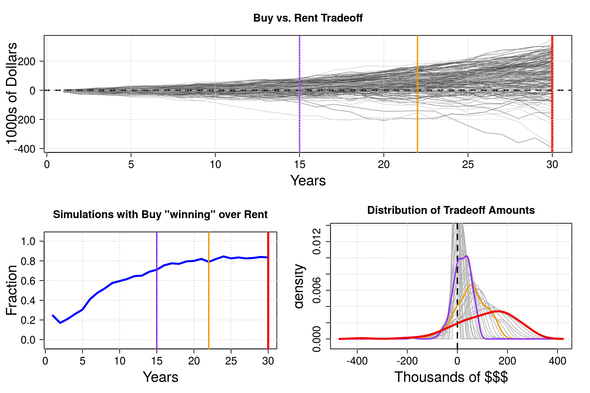

The Buy vs. Rent question confuses countless people daily.
We seek help online, being almost invariably mislead by over-simplistic tools.
The plethora of calculators found on the web in the majority of cases do not properly handle several important aspects of the cost/benefit analysis of buying vs. renting.
For instance:
This calculator implements a more comprehensive and realistic picture, including these and other ingredients, and yields a statistical assessment of the buy vs. rent question by means of simulations.
Given a set of input parameters, 250 simulations are performed, with stochastic “predictions” of the time varying values of:
For the first three, values are drawn from Normal distributions with means and standard deviations given among the application inputs. The additional rent increase rate is drawn from an exponential distribution.
For each simulation a ‘trade-off’ value is computed, giving the difference between buying the given property and renting (including the return of the investment of the cash not put into the property) for each year, for the duration of the mortgage loan. Positive values are in favor of buying, negative indicate that renting would be more beneficial financially.
The simulations results are summarized in three plots showing:
The simulations performed by this simple Application are purely based on general probability density functions, namely Gaussian and Exponential.
However it is clear that for the Annual Variations inputs it would be possible to apply a more real-data-driven approach, by sampling their values from distributions derived from real data from stock market or bonds investment returns, real estate property values, and inflation.
Investment returns could be drawn from a proxy for different investing styles: bond indexes for conservative, S&P500 for middle-ground, NASDAQ composite for more aggressive approach.
Real estate property values could be adjusted regionally, increasing the usefulness and relevance of the Calculator.
The data exist and accessible. I just did not have time to bring them into the fold…
An example is shown below.
# Define parameters (names and values)
paramNames <- c("start_prop_value", "down_payment_pct", "mortgage_rate", "n_years",
"initial_fixed_costs",
"prop_tax_rate_pct", "prop_insurance", "HOA_monthly_fee",
"start_rent", "rent_insurance",
"annual_appreciation", "annual_appreciation_sd",
"annual_inv", "annual_inv_sd",
"annual_inflation", "annual_inflation_sd",
"annual_rent_extra_increase_mean",
"fraction_extra_cash_invested_pct",
"income_tax_rate_pct", "itemized_deductions", "std_deduction",
"n_sim")
fake_input <- list(start_prop_value = 200000,
down_payment_pct = 20.0,
mortgage_rate = 4.5,
n_years = 30,
initial_fixed_costs = 6000,
prop_tax_rate_pct = 2.05,
prop_insurance = 4000.0,
HOA_monthly_fee = 400.0,
start_rent = 1500.0,
rent_insurance = 260.0,
annual_appreciation = 3.0,
annual_appreciation_sd = 2.0,
annual_inv = 5.0,
annual_inv_sd = 7.0,
annual_inflation = 1.5,
annual_inflation_sd = 1.0,
annual_rent_extra_increase_mean = 0.5,
fraction_extra_cash_invested_pct = 50.0,
income_tax_rate_pct = 25.0,
itemized_deductions = 0.0,
std_deduction = 12200,
n_sim = 200)
sims.tradeoff <- do.call(simulate_tradeoff, getParams1(fake_input, paramNames))
n.sim <- getParams1(fake_input, "n_sim")[[1]]
n.years <- getParams1(fake_input, "n_years")[[1]]plot_sims(n.sim, n.years, sims.tradeoff)
Assuming uncorrelated normally distributed values.
Assuming uncorrelated normally distributed values.
Assuming uncorrelated normally distributed values.
Source code of the user-defined functions in scripts/my_functions.R
#=-------------------------------------------------------------------------------
cumprod.matrix.old <- function(x) {
nrows <- dim(x)[1]
ncols <- dim(x)[2]
y <- matrix(1, nrow = nrows, ncol = ncols)
y[1, ] <- x[1, ]
for (i in 2:nrows) {
y[i, ] <- y[i-1, ]*x[i, ]
}
return(y)
}
cumprod.matrix <- function(x) {
nrows <- dim(x)[1]
ncols <- dim(x)[2]
y <- matrix(1, nrow = nrows, ncol = ncols)
y[1, ] <- x[1, ]
for (i in 1:ncols) {
y[, i] <- cumprod(x[, i])
}
return(y)
}
cumdiv.matrix <- function(x) {
nrows <- dim(x)[1]
ncols <- dim(x)[2]
y <- matrix(1, nrow = nrows, ncol = ncols)
y[1, ] <- x[1, ]
for (i in 2:nrows) {
y[i, ] <- x[i, ] / x[i-1, ]
}
return(y)
}
cumsum.matrix <- function(x) {
nrows <- dim(x)[1]
ncols <- dim(x)[2]
y <- matrix(1, nrow = nrows, ncol = ncols)
y[1, ] <- x[1, ]
for (i in 1:ncols) {
y[, i] <- cumsum(x[, i])
}
#for (i in 2:nrows) {
# y[i, ] <- x[i, ] + x[i-1, ]
#}
return(y)
}
cumsub.matrix <- function(x) {
nrows <- dim(x)[1]
ncols <- dim(x)[2]
y <- matrix(1, nrow = nrows, ncol = ncols)
y[1, ] <- x[1, ]
for (i in 2:nrows) {
y[i, ] <- x[i, ] - x[i-1, ]
}
return(y)
}
#=-------------------------------------------------------------------------------
getParams1 <- function(input, pnames) {
# input[["run_simul"]]
params <- lapply(pnames, function(p) { input[[p]] })
names(params) <- pnames
params
}
#=------------------------------------------------------------------------------#=-------------------------------------------------------------------------------
# setup mortgage quantities
setup_mortgage_monthly <- function(start_prop_value = 300000,
down_payment_pct = 20.0,
mortgage_rate = 4.5,
n_years = 30) {
#----
prop.value <- start_prop_value
down.payment.fraction <- down_payment_pct / 100
rate <- mortgage_rate / 100
Nm <- 12*n_years
#----
loan <- prop.value*(1 - down.payment.fraction)
rm <- rate / 12
rm1 <- 1 + rm
mo.payment <- rm*loan*rm1^Nm/(rm1^Nm - 1)
x1 <- 1:Nm
x2 <- 2:(Nm+1)
loan.balance <- loan*(rm1^Nm - rm1^(x1-1))/(rm1^Nm-1)
loan.balance2 <- loan*(rm1^Nm - rm1^(x2-1))/(rm1^Nm-1)
mo.payment.interest <- loan.balance*rm
mo.payment.principal <- mo.payment - mo.payment.interest
return(data.frame(balance.start = loan.balance,
balance.end = loan.balance2,
interest = mo.payment.interest,
principal = mo.payment.principal,
mo.payment = rep(mo.payment, Nm),
interest.cumul = cumsum(mo.payment.interest),
principal.cumul = cumsum(mo.payment.principal),
payment.cumul = cumsum(rep(mo.payment, Nm)))
)
}
#=-------------------------------------------------------------------------------
make_mortgage_annual <- function(monthly_data = NULL) {
annual_data <- monthly_data[ (1:nrow(monthly_data)) %% 12 == 0, c(1, 2, 6, 7, 8)]
annual_data$balance.start <- monthly_data$balance.start[ (1:nrow(monthly_data) + 11) %% 12 == 0]
rownames(annual_data) <- NULL
annual_data.by_year <- cumsub.matrix(as.matrix(annual_data[, c(3, 4, 5)]))
df <- data.frame(annual_data, annual_data.by_year)
colnames(df)[c(6, 7, 8)] <- c("interest.by_year", "principal.by_year", "payment.by_year")
return(df)
}
#=-------------------------------------------------------------------------------
simulate_tradeoff <- function(start_prop_value = NULL,
down_payment_pct = NULL,
mortgage_rate = NULL,
n_years = NULL,
initial_fixed_costs = NULL,
prop_tax_rate_pct = NULL,
prop_insurance = NULL,
HOA_monthly_fee = NULL,
start_rent = NULL,
rent_insurance = NULL,
annual_appreciation = NULL, annual_appreciation_sd = NULL,
annual_inv = NULL, annual_inv_sd = NULL,
annual_inflation = NULL, annual_inflation_sd = NULL,
annual_rent_extra_increase_mean = NULL,
fraction_extra_cash_invested_pct = NULL,
income_tax_rate_pct = 25.0,
itemized_deductions = 0.0,
std_deduction = NULL,
n_sim = 200) {
#-------------------------------------
# Setting up mortgage tables
#-------------------------------------
mortgage <- setup_mortgage_monthly(start_prop_value = start_prop_value,
down_payment_pct = down_payment_pct,
mortgage_rate = mortgage_rate,
n_years = n_years)
# mortgage <- do.call(setup_mortgage_monthly, getParams1(input, paramNamesMort))
annual.mortgage <- make_mortgage_annual(monthly_data = mortgage)
#-------------------------------------
# Inputs
#-------------------------------------
# Initial Property Value
start.prop_value <- start_prop_value
# Down Payment
down.payment <- start.prop_value*down_payment_pct / 100.0
# Additional Fixed Initial Costs
initial.fixed_costs <- initial_fixed_costs
# Initial Property Insurance [index to INFLATION]
prop.insurance <- prop_insurance
# Property Tax Rate
prop.tax.rate <- prop_tax_rate_pct / 100
# HOA fees [index to INFLATION]
HOA.monthly.fee <- HOA_monthly_fee
HOA.annual.fee <- HOA.monthly.fee * 12.0
# Initial Monthly Rent [index to ~INFLATION]
start.rent = start_rent
# Monthly Rent Increase (use `rexp` to draw an increment over inflation rate)
annual.rent.mean <- annual_rent_extra_increase_mean / 100
# Initial Renter Insurance [index to INFLATION]
rent.insurance <- rent_insurance
# Fraction of extra cash re-invested
fraction.extra_cash_invested <- fraction_extra_cash_invested_pct / 100
# Income Tax Rate
income.tax.rate <- income_tax_rate_pct / 100
# Std Deduction [index to INFLATION]
std.deduction <- std_deduction
# Other Itemized Deductions [index to INFLATION]
itemized.deductions <- itemized_deductions
#-------------------------------------------------
# Property Appreciation
annual.appr <- annual_appreciation / 100
annual.appr.sd <- annual_appreciation_sd / 100
# Investment
annual.invest <- annual_inv / 100
annual.invest.sd <- annual_inv_sd / 100
# Inflation
annual.inflation <- annual_inflation / 100
annual.inflation.sd <- annual_inflation_sd / 100
#-------------------------------------------------
# Number of observations (in Years)
n.years <- n_years
# number of months to simulate
n.periods <- 1
n.obs <- n.periods * n.years
# Number of simulations
n.sim <- n_sim
#-------------------------------------------------
# Spreading the rate quantities to sub-periods (not necessarily months maybe)
#-------------------------------------------------
# Property Appreciation
monthly.appr <- annual.appr / n.periods
monthly.appr.sd <- annual.appr.sd / sqrt(n.periods)
# Investment
monthly.invest <- annual.invest / n.periods
monthly.invest.sd <- annual.invest.sd / sqrt(n.periods)
# Inflation
monthly.inflation <- annual.inflation / n.periods
monthly.inflation.sd <- annual.inflation.sd / sqrt(n.periods)
#----
# The following should be updated only at the full years
# extra rent increase
# monthly.rent.lambda <- annual.rent.mean / n.periods
annual.rent.lambda <- 1.0 / annual.rent.mean
#-------------------------------------------------
# simulate Returns
monthly.appr.returns <- matrix(0, n.obs, n.sim)
monthly.invest.returns <- matrix(0, n.obs, n.sim)
monthly.inflation.returns <- matrix(0, n.obs, n.sim)
# monthly.rent.returns <- matrix(0, n.obs, n.sim) # rent should really be increase only yearly
monthly.appr.returns[] <- rnorm(n.obs*n.sim, mean = monthly.appr, sd = monthly.appr.sd)
monthly.invest.returns[] <- rnorm(n.obs*n.sim, mean = monthly.invest, sd = monthly.invest.sd)
monthly.inflation.returns[] <- rnorm(n.obs*n.sim, mean = monthly.inflation, sd = monthly.inflation.sd)
# Not allowing for deflation
monthly.inflation.returns <- ifelse(monthly.inflation.returns <= 0, 0.0, monthly.inflation.returns)
# resets first-year inflation rate to zero.
monthly.inflation.returns[1:n.periods, ] <- 0.0
annual.appr.returns.cumul <- cumprod.matrix(1 + monthly.appr.returns)[ (1:n.obs) %% n.periods == 0, ]
annual.appr.returns <- cumdiv.matrix(annual.appr.returns.cumul) - 1.0
annual.appr.returns[1, ] <- 0.0
annual.invest.returns.cumul <- cumprod.matrix(1 + monthly.invest.returns)[ (1:n.obs) %% n.periods == 0, ]
annual.invest.returns <- cumdiv.matrix(annual.invest.returns.cumul) - 1.0
annual.invest.returns[1, ] <- 0.0
annual.inflation.returns.cumul <- cumprod.matrix(1 + monthly.inflation.returns)[ (1:n.obs) %% n.periods == 0, ]
annual.inflation.returns <- cumdiv.matrix(annual.inflation.returns.cumul) - 1.0
annual.inflation.returns.cumul[1, ] <- 1.0
annual.inflation.returns[1, ] <- 0.0
# FUDGE to set a constant rent increase
if( annual.inflation.sd == 0 ) {
annual.rent.increases <- 0.0*annual.inflation.returns + annual.rent.mean
annual.rent.increases[1, ] <- 0.0
} else {
# REAL
annual.rent.increases <- annual.inflation.returns + rexp(n.years*n.sim, rate = annual.rent.lambda)
}
#-------------------------------------------------
sim.prop_value <- matrix(start.prop_value, n.years, n.sim) * annual.appr.returns.cumul
sim.prop.insurance <- matrix(prop.insurance, n.years, n.sim) * annual.inflation.returns.cumul
sim.HOA.fee <- matrix(HOA.annual.fee, n.years, n.sim) * annual.inflation.returns.cumul
sim.rent <- 12*start.rent*cumprod.matrix(1 + annual.rent.increases)
sim.mort.interest <- matrix(annual.mortgage$interest.by_year, n.years, n_sim)
# Costs
sim.own.costs <- sim.prop_value*prop.tax.rate + sim.prop.insurance + sim.HOA.fee
sim.own.costs[1, ] <- sim.own.costs[1, ] + initial.fixed_costs
sim.own.costs.with.mortgage <- sim.own.costs + annual.mortgage$payment.by_year
# Tax Savings (or not)
sim.deductions <- sim.mort.interest + sim.prop_value*prop.tax.rate + itemized.deductions*annual.inflation.returns.cumul
sim.tax.savings <- ifelse(sim.deductions > std.deduction*annual.inflation.returns.cumul,
income.tax.rate*(sim.deductions-std.deduction*annual.inflation.returns.cumul),
0)
# True Cost (= Costs - Tax Savings)
sim.own.true.cost <- sim.own.costs + annual.mortgage$payment.by_year - sim.tax.savings
# Renting Costs
sim.rent.cost <- sim.rent + rent.insurance*annual.inflation.returns.cumul
# sim.rent.cost <- sim.rent
# Extra Cash and re-investment
sim.cost.delta <- sim.own.true.cost - sim.rent.cost
sim.extra.cash <- ifelse(sim.cost.delta > 0, sim.cost.delta, 0)
sim.invest <- matrix(down.payment, n.years, n.sim) * annual.invest.returns.cumul
sim.invest.alt <- sim.invest
for (j in 2:n.obs) {
sim.invest.alt[j, ] = (sim.invest.alt[j-1, ] + sim.extra.cash[j-1, ]*fraction.extra_cash_invested)*(1+annual.invest.returns[j,])
+ sim.extra.cash[j-1, ]*(1-fraction.extra_cash_invested)
}
sim.tradeoff <- -1*cumsum.matrix(sim.cost.delta) + (sim.prop_value - annual.mortgage$balance.end) - sim.invest.alt
return(sim.tradeoff)
}
#=-------------------------------------------------------------------------------
plot_sims <- function(n.sim, n.years, sim.to) {
par(cex.main = 1.5)
par(cex.lab = 2.0)
par(cex.axis = 1.5)
# layout3 : 1 / 2
shape1 <- c(rep(1,8))
shape2 <- c(rep(2,4), rep(3,4))
shape <- c( rep(shape1, 5), rep(shape2, 5))
mat.layout3 <- matrix(shape, nrow = 10, ncol = 8, byrow = TRUE)
layout(mat.layout3)
palette(c("black", "grey50", "grey30", "grey70", "orange", "#0f23d9"))
palette(rep(c("grey30", "grey70"), 3))
ny1 <- floor(n.years*3/4)
ny2 <- floor(n.years/2)
#--------------------------------------------------
# time-series
par(mar = c(5, 5, 4, 2) + 0.1)
matplot(sim.to/1000, type="l", lwd=0.5, lty=1, col=1:6,
las = 1,
xlab = 'Years',
ylab = '1000s of Dollars',
main = 'Buy vs. Rent Tradeoff')
abline(h=0, col="black", lty=2, lwd=2)
abline(v=ny1, col="orange2", lwd=2)
abline(v=ny2, col="purple2", lwd=2)
abline(v=n.years, col="red2", lwd=3)
grid()
#--------------------------------------------------
# positive fraction
fraction.positive <- rowSums(sim.to > 0)/n.sim
plot(1:length(fraction.positive), fraction.positive, type="n",
ylim = c(-0.05, 1.05),
las = 1,
xlab = 'Years',
ylab = 'Fraction',
main = 'Simulations with Buy "winning" over Rent')
grid()
lines(1:length(fraction.positive), fraction.positive, col="blue", lwd = 3)
abline(v=ny1, col="orange2", lwd=2)
abline(v=ny2, col="purple2", lwd=2)
abline(v=n.years, col="red2", lwd=3)
#--------------------------------------------------
# density distributions
# i.years <- (1:n.years)[(1:n.years) %% 5 == 0]
i.years <- 1:n.years
# i.years <- 1:nrow(sim.to)
to.range <- range(sim.to[i.years, ])/1000.
to.xmin <- to.range[1] - 0.1*(to.range[2] - to.range[1])
to.xmax <- to.range[2] + 0.1*(to.range[2] - to.range[1])
to.distr <- matrix(0, length(i.years), n.sim)
to.dens.x <- matrix(0, length(i.years), 512)
to.dens.y <- matrix(0, length(i.years), 512)
for( ii in 1:length(i.years) ) {
iy <- i.years[ii]
to.distr[ii, ] <- sim.to[iy, ]/1000.
}
for( ii in 1:length(i.years) ) {
to.dens.x[ii, ] <- density(to.distr[ii, ], n=512, from=to.xmin, to=to.xmax)$x
to.dens.y[ii, ] <- density(to.distr[ii, ], n=512, from=to.xmin, to=to.xmax)$y
}
tod.max <- max(to.dens.y[13:n.years, ])
tod.min <- 0.0 - 0.05*tod.max
tod.max <- 1.05*tod.max
# to.dens.toplot.x <- density(sim.to[ny, ]/1000, n=512, from=to.xmin, to=to.xmax)$x
# to.dens.toplot.y <- density(sim.to[ny, ]/1000, n=512, from=to.xmin, to=to.xmax)$y
to.dens.toplot.x <- density(sim.to[nrow(sim.to), ]/1000, n=512, from=to.xmin, to=to.xmax)$x
to.dens.toplot.y <- density(sim.to[nrow(sim.to), ]/1000, n=512, from=to.xmin, to=to.xmax)$y
par(mar=c(5,4,3,2)+0.1)
plot(to.dens.y, type="n",
xlim = c(to.xmin, to.xmax),
ylim = c(tod.min, tod.max),
xlab = 'Thousands of $$$',
ylab = "density",
main = "Distribution of Tradeoff Amounts")
grid()
for( ii in 1:length(i.years) ) {
lines(to.dens.x[ii, ], to.dens.y[ii, ], col="grey70", lwd=1)
}
abline(v=0, col="black", lty = 2, lwd = 2)
lines(to.dens.x[ny1, ], to.dens.y[ny1, ], col="orange2", lwd=2)
lines(to.dens.x[ny2, ], to.dens.y[ny2, ], col="purple2", lwd=2)
lines(to.dens.toplot.x, to.dens.toplot.y, col="red2", lwd=3)
}
#=-------------------------------------------------------------------------------sessionInfo()
# R version 3.1.3 (2015-03-09)
# Platform: x86_64-pc-linux-gnu (64-bit)
# Running under: Ubuntu 14.04.2 LTS
#
# locale:
# [1] LC_CTYPE=en_US.UTF-8 LC_NUMERIC=C LC_TIME=en_US.UTF-8
# [4] LC_COLLATE=C LC_MONETARY=en_US.UTF-8 LC_MESSAGES=en_US.UTF-8
# [7] LC_PAPER=en_US.UTF-8 LC_NAME=C LC_ADDRESS=C
# [10] LC_TELEPHONE=C LC_MEASUREMENT=en_US.UTF-8 LC_IDENTIFICATION=C
#
# attached base packages:
# [1] stats graphics grDevices utils datasets methods base
#
# other attached packages:
# [1] ggplot2_1.0.1 magrittr_1.5 tidyr_0.2.0 dplyr_0.4.2 knitr_1.10.5
#
# loaded via a namespace (and not attached):
# [1] DBI_0.3.1 MASS_7.3-41 R6_2.0.1 Rcpp_0.11.6 assertthat_0.1
# [6] colorspace_1.2-6 digest_0.6.8 evaluate_0.7 formatR_1.2 grid_3.1.3
# [11] gtable_0.1.2 htmltools_0.2.6 munsell_0.4.2 parallel_3.1.3 plyr_1.8.3
# [16] proto_0.3-10 reshape2_1.4.1 rmarkdown_0.7 scales_0.2.4 stringi_0.5-5
# [21] stringr_1.0.0 tools_3.1.3 yaml_2.1.13